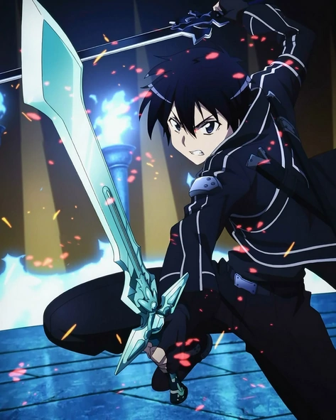

Character Information

Introduction
Kirito, a.k.a Kirigaya Kazuto, is a very cool character in the anime series - Sword Art Online!
He is the major character in most episodes in this anime. He was a seasoned beta tester for the virtual reality MMORPG known as Sword Art Online. His journey takes an unexpected turn when he and thousands of other players become trapped within the game, unable to log out. With the threat of real-life consequences for virtual death, Kirito is determined to conquer the game and free himself and the other players from their virtual prison. For the majority of the game, he remained a solo player, and claimed himself as "beater".
Kirito is characterized by his exceptional combat skills, strategic thinking, and unwavering determination. He wields a unique dual-wielding ability, allowing him to masterfully wield two swords simultaneously, a feat unmatched by most players. This distinctive talent earned him the nickname "The Black Swordsman" and solidified his reputation as a formidable force within the virtual realm.
Throughout the series, Kirito's journey expands beyond Sword Art Online and delves into various other virtual worlds, each possessing its own set of challenges and dangers. Despite the adversities he faces, Kirito remains resolute in protecting his friends, seeking justice, and uncovering the mysteries that lie within these virtual realities.
Beyond his combat prowess, Kirito is portrayed as a compassionate and empathetic individual, forming deep connections with other characters and displaying unwavering loyalty to his friends and loved ones. His relationships, particularly his bond with Asuna Yuuki, a fellow player and love interest, are central to the story's emotional core and serve as a driving force for his motivations.
Kirito's journey throughout the Sword Art Online series showcases his growth as a character, as he confronts personal demons, learns valuable life lessons, and ultimately becomes a symbol of hope and resilience within the virtual worlds he inhabits.
| Age | Gender | Birthday | Height | Weight | Epithet |
|---|---|---|---|---|---|
| >17 | Male | October 7, 2008 | 172 cm | 59 kg | Beater (ビーター) |
Character Spotlight
Character Skills
In Sword Art Online, Kirito defeated many enemies using his famous sword skills. Here, we list some of his representative sword skills.
- Slant
- Vertical
- Starbrust Stream